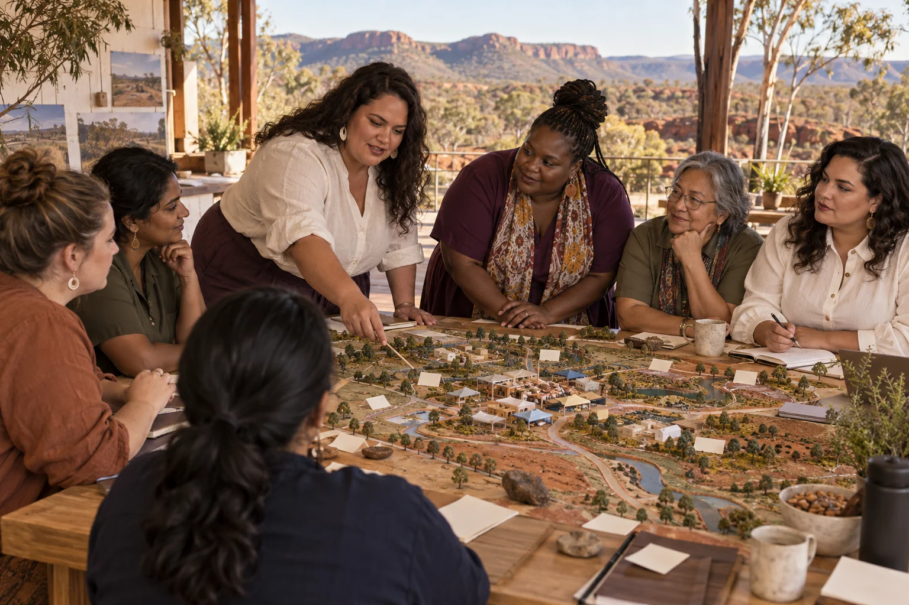

Choose a service question with a willing community group.

500 Queens / Population Stability
Population Stability
Explore population change through community needs, personal choice and transparent scenarios.
Follow the connections. Choose your direction.
The need worth working on.
The title can suggest a single ideal population, but communities experience change through housing, care, schools, work and belonging. A useful analysis should not prescribe people's family choices. It should help residents compare plausible service needs and understand the assumptions behind each scenario.
What the enterprise could offer.
Develop a demographic scenario and service-planning studio using public data at an appropriate level. Let a community group choose a practical question, such as future care access or workforce succession. Present several scenarios with uncertainty rather than a single authoritative forecast.
People to build with
- Community organisations planning future services
- Local enterprises considering workforce or customer changes
- Residents wanting a clearer conversation about growth and ageing
A population question tied to one service
Gather relevant public data and record its date, definitions and limitations.
Build a few transparent scenarios using explicitly stated assumptions.
Ask residents what each scenario would mean for daily life and access.
Publish the model with a record of what would change the conclusions.
The first result
An inspectable scenario tool and a participant-reviewed service implications brief.
What needs to be demonstrated.
Practical pilot
The starting evidence
Public demographic data can support conditional scenarios. A scenario is not a prediction or a prescription for personal decisions.
The open question
The source specifies no locality, demographic target, model or agreed policy direction.
The next measurement
Check the model against an appropriate historical period and explain where it fails to match observed change.
Build the means to deliver.
Useful capabilities and resources
- A demographic or planning researcher
- Reliable public datasets
- Accessible facilitation and a transparent modelling tool
A possible business model
Commissioned scenario studies and public learning tools, with assumptions open to inspection.
A leadership decision to practise
Keep personal reproductive and relationship choices outside any optimisation target. Let the community define the service question.
People, consequences and decisions.
- A scenario can be presented as an inevitable future.
- Broad averages may hide migration, age or household differences.
- A stability narrative can marginalise newcomers or unusual households.
If equality were being designed now...
- Do women retain full agency over family and life choices in every scenario?
- Are migrant and non-traditional households represented as community members with a voice?
Begin with women's own experiences across bodies, ages, cultures and places. Invite disagreement and choose a practical change together.
Create a women-led design brief →Build your learning council.


Build alongside these ideas.
Humanities and funMatrimony of Many
Explore how adults in varied households can make care, responsibilities and decisions explicit.
Practical pilot
Market analysisAged Care and NDIS
Find care-service opportunities by listening to the people receiving and delivering the work.
Practical pilot
Market analysisMigration & International Students
Understand how newcomers find belonging, useful information and fair opportunities in Australia.
Practical pilot
Market analysisHousing and Tourism
Study housing and visitor-economy choices together without treating residents as an afterthought.
Practical pilot
Follow existing public concept work.
Connected public conceptMinjerribah Living Twin
A browser simulation explores connections between island ecology, services, movement and everyday life.
Connected public conceptGAJRA Earth Infinity
A public practice for listening, choosing useful actions, examining results and improving what comes next.
From the original suggestion to a working brief.
Developed from original enterprise 109 in the 500 Queens VC NEW Long presentation (slide 18) and the planning document (page 8). This expanded brief is a proposed development path, not evidence of an operating venture or a confirmed partner.
Original title: Population Stability. The pilot, business model and learning connections on this page are proposed developments of that original idea.